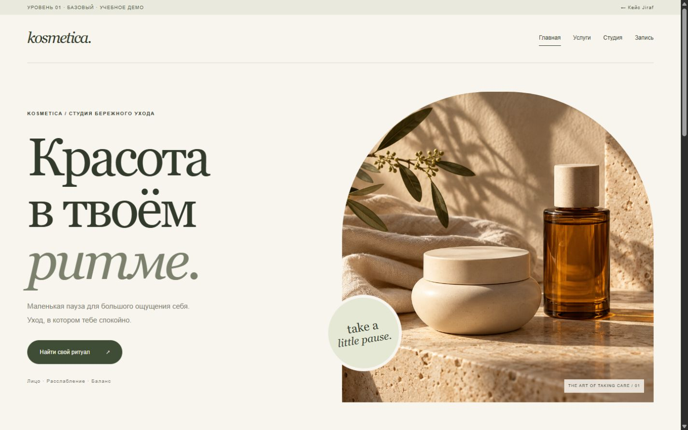
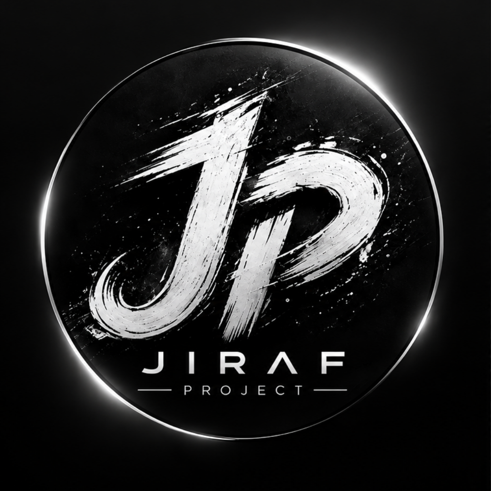
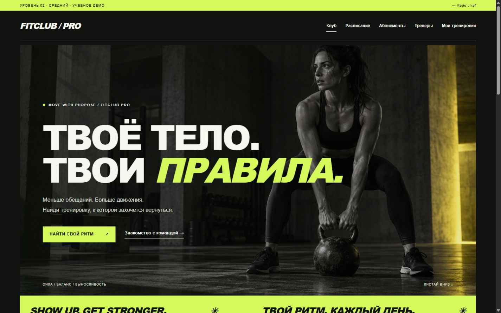
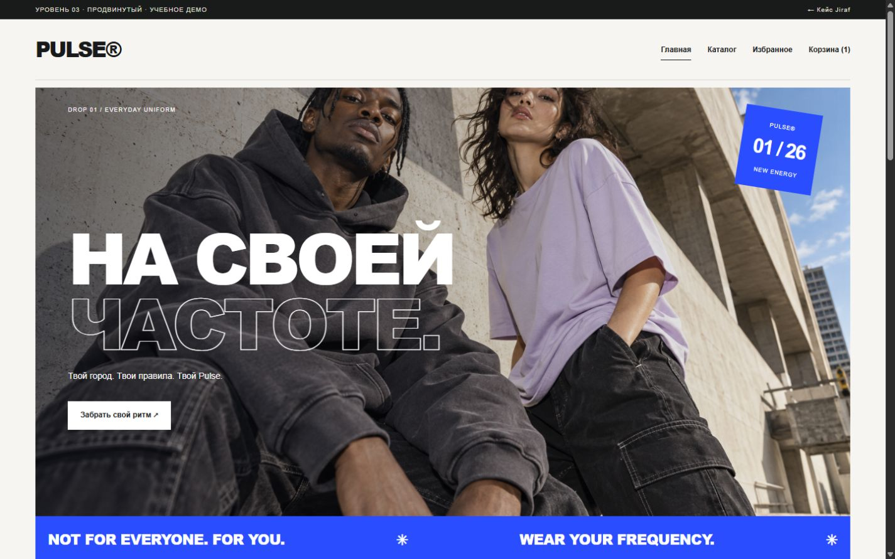
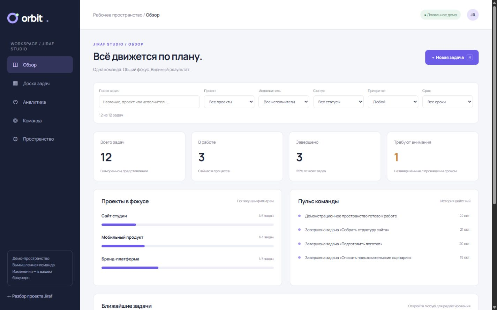

01 / 0401 · Базовый4 страницы
Kosmetica
Структура сайта, адаптивная вёрстка и форма записи.

JIRAFPROJECT Обсудить проект ↗01 Веб-разработчик / Москва
Помогаю перенести рабочие процессы в веб: от сайта с онлайн-записью до каталога товаров и системы управления.
Смотреть02 Мои проекты
Интерактивные демо
и решения
Четыре учебных проекта с разной сложностью. Каждый можно открыть и проверить в работе.

01 / 04Структура сайта, адаптивная вёрстка и форма записи.

02 / 04Фильтры расписания и личный план между страницами.

03 / 04Каталог, размеры, корзина, промокод и оформление.

04 / 04Канбан, модель данных, аналитика и импорт пространства.
03 Собственный продукт
Идея → приложение
Личный проект / Android-бета
Приложение для согласования доступности группы и планирования встреч.
Перед установкой прочитайте инструкции и ограничения беты.
Когда удобно
всем?
04 Услуги
От задачи к решению
Персональный сайт, презентация бизнеса или сайт с каталогом. Структура, адаптивная вёрстка и понятная навигация.
СТРУКТУРА / ДИЗАЙН / РАЗРАБОТКАИнструменты для рабочих процессов: запись, управление данными, личные кабинеты и интеграции. Функции и объём определяем под задачу.
СЦЕНАРИИ / ЛОГИКА / ДАННЫЕИнтерфейсы сайтов и приложений: структура экранов, визуальная система и проработка основных пользовательских сценариев.
UI / UX / АДАПТИВНЫЕ МАКЕТЫСтоимость и сроки согласуем после обсуждения задачи, функций и этапов.
05 Как проходит работа
Для кого проект и какую проблему он должен решать.
Согласуем функции, этапы, стоимость и сроки.
Прорабатываем решения и обсуждаем результат по ходу работы.
Проверяем основные сценарии и передачу готового проекта.
06 Немного обо мне
Less noise.
More meaning.
Я верю, что хороший дизайн — это не украшение, а ясный ответ на важный вопрос.
Занимаюсь веб-разработкой и преподаванием. Соединяю интерфейс, серверную логику и базы данных в понятные инструменты для пользователей.
Что я знаю
07 Есть идея?
Расскажите, что хотите создать.
Можно начать с короткого описания идеи.